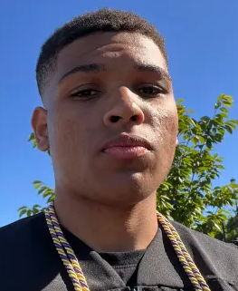

Hi, I'm Darlin Diaz
SOC Analyst (L1) & Developer
Entry-level cybersecurity professional focused on detection engineering, endpoint visibility, and SIEM-driven investigations. Building hands-on experience through Splunk labs, EDR analysis, and SOC-style homelab environments.
Cybersecurity Focus
Entry-level cybersecurity candidate pursuing a SOC Analyst (L1) role with a strong focus on detection engineering, endpoint telemetry, and SIEM-based investigations.
CompTIA Security+ and CySA+ certified, with the stackable CSAP (Security Analytics Professional) certification. Actively building a hands-on SOC homelab using Splunk SIEM, Windows and Linux log sources, and endpoint telemetry to practice real-world alert triage and incident response.
Regularly completing TryHackMe blue team and SOC-focused labs covering EDR, log analysis, and adversary behavior.